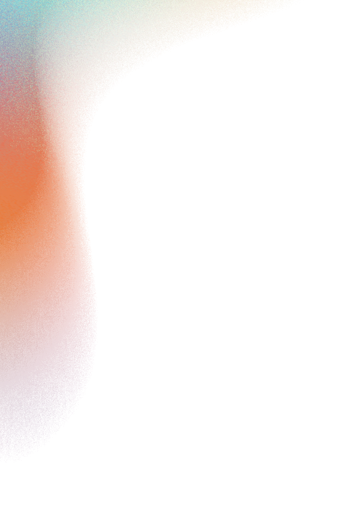

Le Coachella Valley Music and Arts Festival (en français : « Festival de musique et d'arts de la vallée de Coachella », plus communément appelé « Festival de Coachella » ou « Coachella »), est un événement initié par le groupe de musique Pearl Jam1,2 et organisé, depuis 1999, par Paul Tollett et sa société Goldenvoice1, filiale d'AEG Live, promoteur de concerts, propriété de l'homme d'affaires Philip Anschutz3. Le festival se déroule chaque année pendant six jours, sur deux fois trois jours2, généralement les troisième et quatrième week-ends d'avril, à Indio, près de Los Angeles, en Californie. Il est considéré comme l'un des plus grands festivals annuels aux États-Unis4 et dans le monde. C'est à la fois un évènement musical, artistique, mondain et médiatique. Le festival est florissant sur le plan financier. En 2013, la seule vente des billets a rapporté 47 millions de dollars1. En 2017, elle a permis d’engranger 84 millions5.
Check Coachella 2022 Highlights
